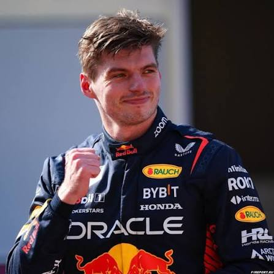
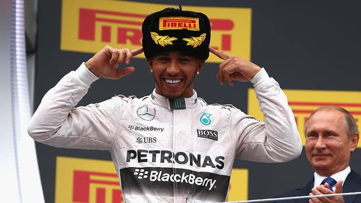

Льюис Хэмилтон
Семикратный чемпион мира. Дебютировал в 2007 году в McLaren, с 2013 года выступал за Mercedes, с 2025 года — в Ferrari.
Подробнее»
Макс Ферстаппен
Четырёхкратный чемпион мира. В 2015 году дебютировал в Toro Rosso в 17 лет и стал самым молодым гонщиком в истории Формулы 1. Титулы 2021–2024 годов завоевал в составе Red Bull.
Подробнее»
Легенды Формулы 1
Чемпионат мира Формулы 1 проводится с 1950 года, когда первый этап прошёл на трассе Сильверстоун. За десятилетия в нём выступали сотни гонщиков, но лишь немногие вошли в историю как настоящие легенды.
Хуан Мануэль Фанхио завоевал пять титулов в пятидесятые годы, Ален Прост, Айртон Сенна и Нельсон Пике в восьмидесятые и девяностые делили между собой чемпионские кубки, а Михаэль Шумахер и Льюис Хэмилтон довели число титулов до семи.
На этой странице собраны краткие сведения о самых известных пилотах, а полный список вы найдёте в разделе «Гонщики».
Подробнее»
Годы чемпионских титулов
Хэмилтон: 2008, 2014, 2015, 2017, 2018, 2019, 2020. Шумахер: 1994, 1995, 2000, 2001, 2002, 2003, 2004. Ферстаппен: 2021, 2022, 2023, 2024. Фанхио: 1951, 1954, 1955, 1956, 1957. Сенна: 1988, 1990, 1991. Эти цифры показывают, как менялось соотношение сил в чемпионате на протяжении семи десятилетий его истории.
Подробнее»
Михаэль Шумахер
Семикратный чемпион мира. Два титула (1994 и 1995) выиграл в Benetton, ещё пять (2000–2004) в Ferrari. Многие годы его достижения считались недосягаемыми. Всего он одержал 91 победу в Гран-при.
Подробнее»Айртон Сенна
Трёхкратный чемпион мира (1988, 1990 и 1991). Выступал за McLaren, считается одним из величайших мастеров квалификации.
Подробнее»